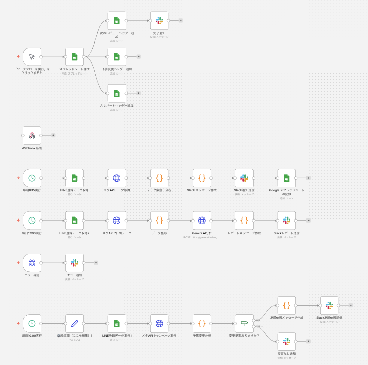
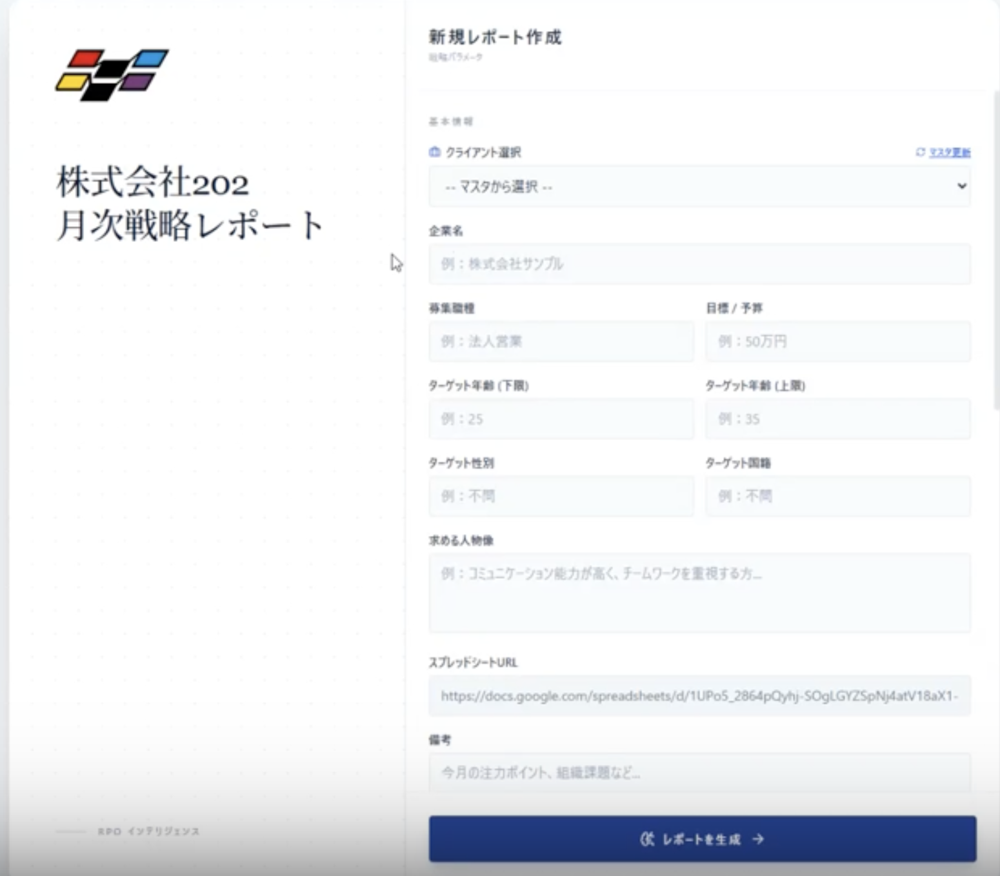
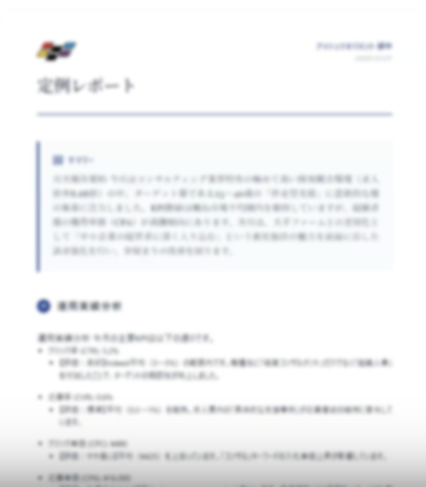
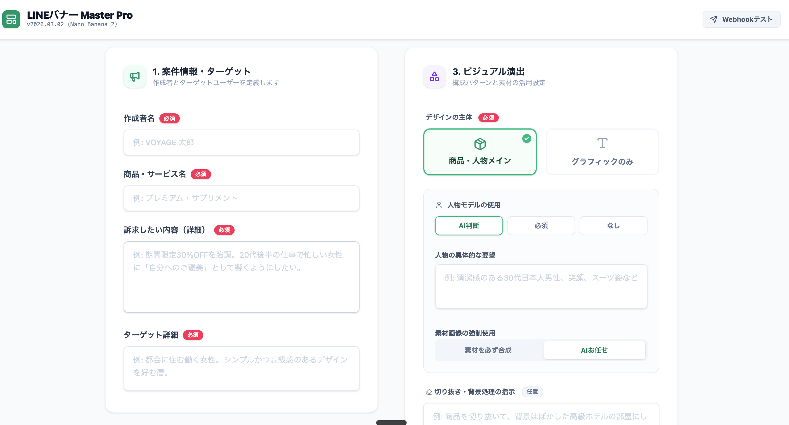
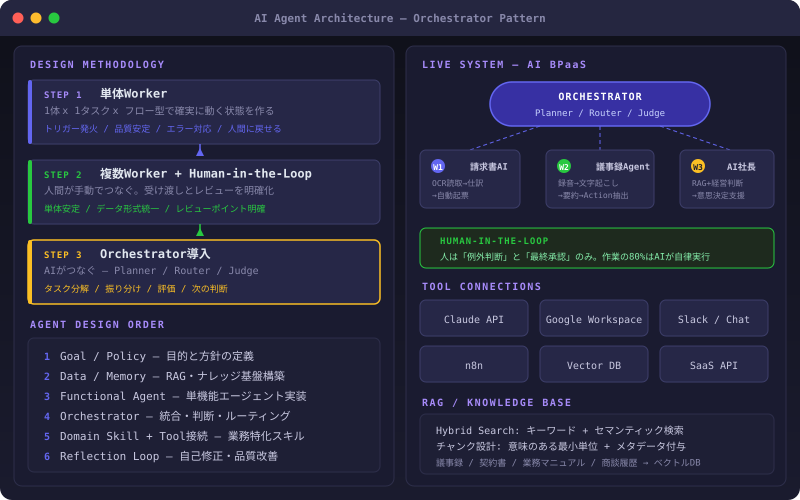
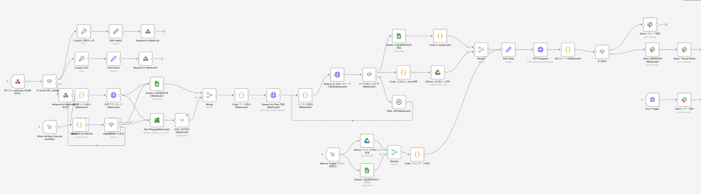
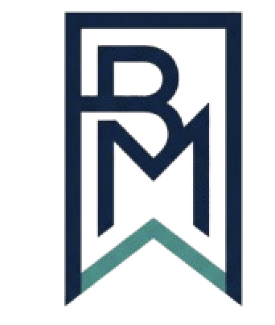

AIエージェント設計
Orchestrator-Workers + Human-in-the-Loop で業務を再構成。RAG設計（BM25 + ベクトルのハイブリッド検索・チャンク戦略・メタデータ）から Evaluator-Optimizer ループまで、エージェントの全レイヤーを設計・実装します。
Summary
AIエージェント設計、業務自動化ワークフロー構築、AI BPaaS基盤の設計・実装・運用定着まで一気通貫で実行。在学中に12社のAI導入を推進し、累計月150時間以上の業務削減を実現しています。
業務プロセスを分解し、AIが自律実行する部分と人が判断する部分を切り分けて再設計する。Anthropic公式パターン（Orchestrator-Workers + Human-in-the-Loop）でAIエージェントを構築し、n8n・Claude API・各種SaaS APIを統合して「人は承認だけ」の運用基盤を作ります。
Strengths
AIエージェント設計・業務自動化・事業推進の3領域で価値を出します。
Orchestrator-Workers + Human-in-the-Loop で業務を再構成。RAG設計（BM25 + ベクトルのハイブリッド検索・チャンク戦略・メタデータ）から Evaluator-Optimizer ループまで、エージェントの全レイヤーを設計・実装します。
n8n・Claude API・Google Workspace・Slack等を統合し、請求書処理・議事録・レポート生成・広告配信を全自動化。提案書ではなく、動く仕組みを納品します。
属人化した業務フローを可視化・標準化し、AIが自律実行/人が判断のみの構造へ再設計。ツール導入ではなく、業務プロセスごと引き受けるAI BPaaSモデルを構築。
Projects
公開・提出しやすいように、社名や機密情報は出しすぎず、役割・課題・成果が伝わる形でまとめています。

Google Sheets、Slack、AI APIを連携し、定期実行、レポート生成、関係者への通知までを自動化する業務フローを設計しました。


求人情報、ターゲット、予算、採用課題などを入力すると、提案・分析レポートのたたき台を生成する社内向けツールを設計しました。

商品情報・ターゲット・訴求内容を入力するだけで、LINE広告用バナー画像を自動生成するWebアプリを設計・実装しました。デザイナー不在でも広告クリエイティブを量産できる仕組みです。

業務プロセスを「丸ごとAIに引き受けさせる」設計を行っています。単体Workerの安定稼働から、Human-in-the-Loopによる品質担保、最終的にOrchestratorがタスク分解・振り分け・評価まで自律判断する3段階のアーキテクチャで構築。

音声、議事録、Google Drive、Slack通知をつなぎ、情報整理やタスク抽出を自動化するフローを設計。人が判断に集中できる状態を目指しました。
Skills
エンジニアリングだけ、営業だけに閉じず、事業課題から運用までつなげて考えるためのスキルセットです。
Work Process
業務を聞く→分解する→AIで仕組み化する→運用に乗せる。この型を全案件で再現しています。
困っている作業、判断が必要な箇所、例外が起きる場面を聞き、業務を流れで捉えます。
いきなり大きく作らず、最初に価値が出る範囲を決めてプロトタイプ化します。
通知、ログ、権限、例外対応、引き継ぎまで整え、使われ続ける仕組みにします。

Narrative
ツール導入で終わる支援はしません。業務フローを分解し、AIが自律実行できる部分と人が判断すべき部分を切り分け、Orchestrator-Workers パターンで全体を統合する。作業の80%をAIに任せ、人は意思決定に集中できる状態を作るのが自分の仕事です。